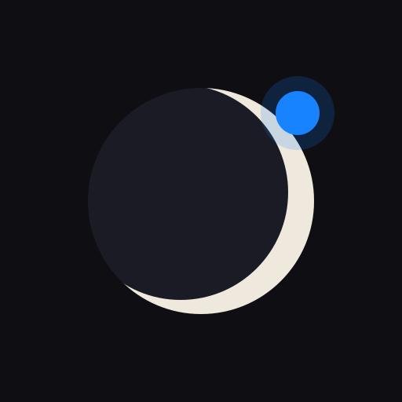

KIMI COOKBOOK
NO. 02
这本书讲什么
10 章,把
Kimi
从工具讲成一个栈。
01
引子
· 你印象里的 Kimi 是旧的
02
全景
· 一套对标前沿的栈
03
挑模型
· K3、K2.7-Code 与 K2.6
04
四模式
· 快答、深想、交办、集群
05
交办
· Agent 直接做成品
06
大活
· Agent Swarm 与 Kimi Claw
07
查证
· Deep Research 出带出处的报告
08
写码 & 接 API
· 把 Kimi 配进你的 Agent
09
选档 & 取舍
· 买哪档,什么时候回 frontier
10
实战速查
· 哪类活该用哪一面